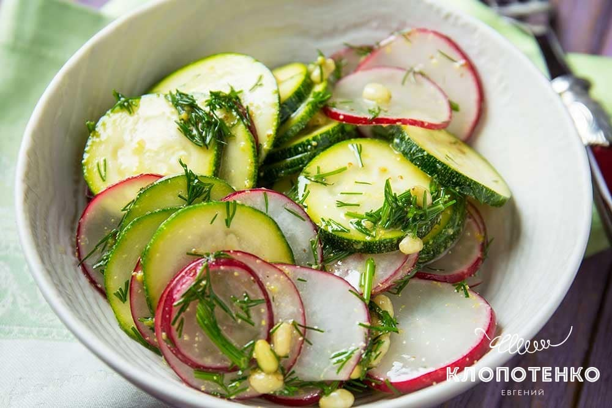

Все тренировки в зале делятся на: силовые тренировки, кардио, базовый и ступенчатый тренинг, круговые тренировки, HIIT-тренировки, нон стоп и интервальные, тренировки на определенные группы мышц и на все тело (так называемое фулбади)
большеСпециальная Диета
Девушки и женщины до такой степени любят мышцы. Что они сами начинают себе их качать.
варенная курица
Если вы относитесь к поклонникам варёного мяса, то воду, в которую собираетесь погрузить курицу, надо довести до кипения. Данная мера поможет снизить потери.
Избавят от пресного вкуса репчатый лук, петрушка, морковь или корень сельдерея, добавленные при варке. Солить нужно, когда приготовление блюда подходит к концу. Вся процедура должна длиться минут двадцать пять
Куриную грудку перед приготовлением следует замариновать. Основу для маринада составляйте из обезжиренных кисломолочных продуктов (кефир, йогурт), соевого соуса, сока лимона.
Можно смешать сто граммов йогурта с двумя чайными ложками лимонного сока и незначительным количеством соуса «Табаско».
греческий салат
Традиционный греческий салат готовят из 7 ингредиентов: огурцов, томатов, зеленого сладкого перца, красного лука, оливок, заправляют оливковым маслом Extra Virgin и всегда сверху выкладывают целый кусок сыра фета, а не нарезают кусочками.
Правда, если подают салат порционно. Если готовят на общий стол, фету режут большими кубиками. Это классическое сочетание продуктов отлично подойдет к мясным и рыбным блюдам.
Красивый, сочный и ароматный греческий салат, пожалуй, самый популярный из всех овощных салатов.
А любят его за идеальное сочетание ингредиентов, насыщенный вкус и быстроту приготовления.

салат с печенью трески
Обожаю рецепты, на приготовление которых не нужно тратить много времени и сил, а в результате получается божественно вкусно. Например, простые рецепты салатов. Салат с печенью трески как раз такой. Вам нужно всего лишь сварить яйца, нарезать овощи и зелень и добавить саму печень трески. Немного лимонного сока и оливкового масла – и невероятно вкусный салат готов.

салат со шпинатом и свеклой
Над этим рецептом можно экспериментировать и искать свой вкус, немного меняя ингредиенты. Свеклу мы отваривали, но по желанию ее можно запечь в духовке, так она тоже прекрасно раскроется в блюде. Просто помойте овощ, заверните в фольгу и положите в разогретую до 180 градусов духовку на 1,5-2 часа, в зависимости от размера. Также можно заменять и виды сыра – вкусно будет с сыром с голубой плесенью или мягким козьим. Свекла прекрасно сочетается с орехами, поэтому вы можете заменить ими жареные тыквенные семечки, если вдруг их нет.
запеченная молодая капуста
Этот рецепт жареной молодой капусты — это о хрустящих и ароматных дольках овоща, приправленных оливковым маслом и специями, а затем запеченные в духовке до готовности и румяных подпалин. Простой и недорогой гарнир, идеально сочетающийся с курицей, говядиной и морепродуктами. Или отличный весенний салат, который убедит даже придирчивых гурманов в том, что это действительно стоит попробовать.
простой салат с цукини и редиской
Берите молодой цукини без семян внутри и с мягкой шкуркой, которую не нужно очищать.
Редиска должна быть сладкой и плотной, поэтому обязательно попробуйте ее перед использованием.
Этому тандему хорошо подходят листья бэби шпината, салат айсберг, огурцы, базилик и немного чеснока. Поэтому добавляйте при случае по вкусу.
Для заправки можете использовать лимон или лайм, а еще экспериментировать с маслом – добавлять кедровое, кукурузное, льняное или тыквенное.
